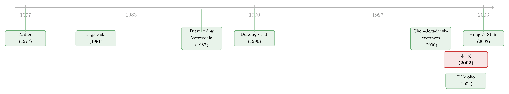

被「请」出市场的悲观者，藏在持股人数里
本文读的是 Chen, Hong & Stein (2002, JFE)：当一只股票的持有者「越来越少」——即所有权宽度 (breadth) 下降——这其实是在告诉你，卖空约束正绷得很紧，悲观者被挤出了市场，价格相对基本面偏高。于是宽度下降应当预测未来低收益。用 1979–1998 年的共同基金持仓数据，他们发现：上一季度宽度变化处于最低十分位的股票，在随后 12 个月里要比最高十分位少赚 6.38%；剔除规模、账面市值比与动量后，这个差距仍有 4.95%。
1 一个老问题：被「请」出去的人，去哪了？
先从一个简单的画面开始。
假设一只股票，有人看多，有人看空。在一个没有摩擦的世界里，看空的人会去卖空 (short selling)，把他们的悲观判断「写」进价格里，于是价格反映了市场上所有人的意见——多空相抵，价格停在一个公允的位置。
但真实世界里，卖空并不自由。很多重要的机构投资者——尤其是共同基金 (mutual fund)——干脆被章程禁止做空。Almazan et al. (1999) 发现，大约 70% 的共同基金白纸黑字地声明自己不许卖空；这还只是一个下界。结果就是：看空的人没法卖空，他们只能干脆不持有，然后默默走开。
这就引出了一个由来已久的猜想。早在 Miller (1977) 就指出：当存在卖空约束、且投资者意见分歧时，股票价格只会反映乐观者的估值，而不会反映悲观者的估值——因为悲观者被「请」出了市场。于是一个反直觉的推论出现了：意见分歧越大，价格越高，未来收益反而越低。
这个故事听起来太顺了。它的两个前提都很扎实——投资者确实会对同一份信息得出截然不同的判断（这正是解释成交量的主流理由，见 Varian, 1989; Harris and Raviv, 1993; Kandel and Pearson, 1995; Odean, 1998）；卖空约束也确实普遍存在。可奇怪的是，将近 25 年过去，支持 Miller 的干净证据却一直很稀薄。
问题出在哪？
2 老办法的死角：为什么「卖空余额」靠不住
接着，一个自然的问题是：人们过去是怎么检验 Miller 的？
主流做法跟着 Figlewski (1981) 走：去看卖空余额 (short interest) 和未来收益的关系。逻辑是把「实际记录到的卖空量」当作「如果不受约束、本来会有多少卖空」的代理变量，从而衡量有多少负面信息被挡在了价格之外（Figlewski and Webb, 1993）。沿这条路走的还有 Brent et al. (1990)、Asquith and Meulbroek (1995)、Dechow et al. (2001) 等等。
然后，麻烦来了。这个办法有两个死角。
第一，样本太小。 绝大多数股票在任何时点几乎都没有卖空余额。Dechow et al. (2001) 记录：1976–1993 年间，超过 80% 的 NYSE/AMEX 公司卖空余额不到流通股的 0.5%，超过 98% 的公司不到 5%。于是「高卖空组合」天然就是一小撮股票，检验的功效（power）很弱，结论也未必能推广。
第二，也是更致命的——卖空余额的含义本身是模糊的。 不同股票卖空余额的差异，可能根本不是因为「负面信息多寡」，而是因为做空的成本不同。有些股票机构持股多、可借的券多、做空便宜（D'Avolio, 2002，关于这块券源市场的微观结构，可参见《做空之前，你得先借到那张股票》）。如果是这样，一只卖空余额低的股票，可能恰恰是难借、难做空的那种——这意味着更多、而非更少的负面信息被挡在了价格外。换句话说，卖空余额和未来收益之间，理论上根本就不该有一个干净的符号。
于是，本文最关键的一步出现了：换一把更好的尺子。
3 真正关键的一步：把「持股人数」当成估值指针
作者的洞见其实只有一句话——所有权宽度，是一个估值指针 (valuation indicator)。
宽度，粗略地说，就是「持有这只股票多头仓位的投资者数量」。当一只股票的宽度更低，意味着更多人坐在了场边，他们悲观的估值没有被记进价格。所以宽度低，等价于卖空约束绑得更紧，等价于价格相对基本面更高。
这比卖空余额好在哪？好在它不依赖「卖空成本」这个干扰项。无论价格为什么偏高——是分歧大、是套利者风险承受力低、还是供给冲击——只要价格相对基本面偏高，宽度就会低。这一点，作者会在模型里证明成一条无歧义的正相关。
这个洞见立刻派生出两类可检验的假说：
- 其一，宽度本身就能预测收益：宽度下降预测低收益，宽度上升预测高收益。
- 其二，宽度应当和其它估值指针正相关——比如账面市值比 (Fama and French, 1992; Lakonishok et al., 1994)、盈利价格比 (Basu, 1983)、动量 (Jegadeesh and Titman, 1993)。
为什么需要一个模型来把这件事讲清楚？因为「宽度是估值指针」这句话听起来直白，但要证明它对所有参数变化都成立（而卖空余额不行），就必须把 Miller 的直觉写成方程。
4 模型：把 Miller 的直觉写成一行方程
模型只考虑一只股票、两个时点。股票总供给为 Q 股，时点 2 每股派发终端股利 \(F+\varepsilon\)，其中 \(\varepsilon\) 是均值 0、方差 1 的正态冲击。时点 1 有两类交易者。
第一类是只能做多的买家（就把他们想成共同基金）。这是一个连续统，每个买家 \(i\) 对股利的估值 \(V_i\) 均匀分布在区间 \([F-H,\,F+H]\) 上。所以平均而言买家的判断是对的（均值为 \(F\)），但彼此之间有分歧，分歧的程度由参数 \(H\) 刻画。买家总质量归一化为 1，具有常数绝对风险厌恶 (constant-absolute-risk-aversion, CARA) 效用，风险容忍度 \(\gamma_B\)。若没有卖空约束，买家 \(i\) 的需求是 \(\gamma_B(V_i-P)\)；但有了约束，实际需求是
$$\text{Max}\big\{0,\ \gamma_B(V_i-P)\big\}.$$
第二类是完全理性的套利者（想成对冲基金），既能做多也能做空，聚合风险容忍度 \(\gamma_A\)，总需求 \(\gamma_A(F-P)\)。
先看没有约束的世界。 市场总需求是买家积分加套利者：
$$QD^U=\frac{1}{2H}\int_{F-H}^{F+H}\gamma_B(V_i-P)\,dV_i+\gamma_A(F-P).$$
令需求等于供给 \(Q\)，解得无约束价格
$$P^U=F-\frac{Q}{\gamma_A+\gamma_B}.$$
注意这里的妙处：买家的异质性 \(H\) 完全不影响价格——乐观者与悲观者恰好相抵，价格就跟所有人都持理性预期 \(F\) 时一样。这正是「无摩擦则分歧无害」的基准。
再看约束绑定的世界。 此时积分下限从 \(F-H\) 变成 \(P\)——因为估值低于价格的买家直接退场，需求被截断：
$$QD^C=\frac{1}{2H}\int_{P}^{F+H}\gamma_B(V_i-P)\,dV_i+\gamma_A(F-P).$$
令 \(QD^C=Q\)，得到一个二次方程，解出约束下的价格 \(P^C\)：
$$P^C=F+H+\frac{2H}{\gamma_B}\left(\gamma_A-\sqrt{\gamma_A^2+\gamma_A\gamma_B+\gamma_B\frac{Q}{H}}\right).$$
而约束是否真的绑定，取决于无约束价格是否已经超过了最悲观买家的估值 \(F-H\)。可以证明，当且仅当 \(H\geq Q/(\gamma_A+\gamma_B)\) 时约束绑定。于是均衡价格 \(P^{*}\) 写成：
$$ P^{*}= \begin{cases} P^U & \text{if } H<\dfrac{Q}{\gamma_A+\gamma_B},\\[2mm] P^C & \text{if } H\geq\dfrac{Q}{\gamma_A+\gamma_B}. \end{cases} $$
可以证明 \(P^{*}\) 永远不小于 \(P^U\)，且 \(P^{*}\) 随分歧 \(H\) 递增——分歧越大，价格越高，期望收益 \((F-P^{*})\) 越低。这里要提醒一句：模型里没有任何经典定价因子，所以 \((F-P^{*})\) 更准确地说是「经因子风险调整后的净期望收益」。
核心一步：宽度，就是 \((F-P^{*})\) 的镜子
现在到了全文的枢纽。把所有权宽度 \(B\) 定义为「持有多头的买家比例」：
宽度被夹在 0 和 1 之间。它等于 1，是当价格低到连最悲观者都愿意买；它趋近 0，是当价格逼近最乐观者的估值。
这条定义里藏着两条命题。
命题 1（分歧渠道）：当分歧 \(H\) 上升，宽度 \(B\) 与期望收益 \((F-P^{*})\) 同时下降。这正是 Miller 的直觉。但作者强调：如果模型里唯一的变异来源是 \(H\)，那其实用卖空余额也能得到清晰预测——\(H\) 最大的股票收益最低，也被套利者做空得最狠。所以单看命题 1，宽度还没有压倒性的优势。
真正拉开差距的是命题 2。 考虑模型里其它参数的变化（\(\gamma_A\)、\(\gamma_B\) 或 \(Q\)）。从宽度定义可以看出，固定 \(H\)，宽度完全由 \((F-P^{*})\) 决定。于是任何把价格 \(P^{*}\) 推高的因素——无论是套利能力下降，还是像 DeLong et al. (1990) 那样把 \(Q\) 理解为投资者情绪冲击——都会同时表现为宽度下降。所以：
无论变异的来源是什么，宽度与期望收益之间的无条件相关都无歧义地为正。
而命题 3 给出了对照：当套利者风险容忍度 \(\gamma_A\) 变化时（在 \(H\geq 4Q/\gamma_B\)、套利者做空的情形下），\(\gamma_A\) 上升会同时抬高卖空余额、压低价格、推高宽度与期望收益——这恰好和 \(H\) 变化诱导的相关方向相反。一正一负，于是卖空余额与收益的相关被「搅浑」了。这就把第 2 节的直觉证成了定理：没有好的理论理由期待卖空余额是收益的可靠预测变量。
模型自此把全部赌注押在一句话上：宽度是稳健的估值指针，卖空余额不是。
5 数据与识别：用基金持仓「数人头」
数据来自 CDA/Spectrum 的共同基金普通股持仓库，覆盖 1979 年一季度到 1998 年四季度、注册在美国的共同基金的季度持仓。基金按 SEC 规定每半年披露持仓，CDA 再用基金自愿的季报补全。作者不按投资目标筛选任何基金。
每个季度 \(t\)，对每只股票，宽度 BREADTH 定义为持有该股多头的基金数 ÷ 当季样本里的基金总数。
这里有一个不可忽视的细节：基金的「宇宙」一直在膨胀——1979 年一季度只有 582 只基金，到 1998 年四季度已有 8950 只。如果不小心，宽度变化会被「新基金诞生、老基金消亡」这种成分变化污染。所以宽度变化 ΔBREADTH 的构造很讲究：只看在 \(t\) 和 \(t-1\) 两个季度都在样本里的基金，用其中「\(t\) 季持有」减去「\(t-1\) 季持有」的基金数，再除以 \(t-1\) 季的基金总数。
这步「只数老基金」的处理，是整个识别的关键——它把度量从「行业规模变化」里剥离出来，让 ΔBREADTH 尽量只反映现有基金的进出。作者还把它拆成 ΔBREADTH = IN − OUT：IN 是新开仓的基金比例，OUT 是清仓的基金比例。
其它变量都来自标准数据源：LOGSIZE（CRSP 市值对数）、BK/MKT（按 Fama and French, 1993 构造的账面市值比）、E/P、MOM12（CRSP 过去 12 个月累计收益）、以及来自 CRSP 的换手率。
最大的软肋，作者自己摆在了台面上。 理论要的是「全体受卖空约束的投资者」的宽度，而数据只覆盖共同基金。设想：100 股、100 只基金，初始每只持 1 股。情形 A：50 只增持到 2 股、50 只清仓——这是我们想要的「宽度下降」。情形 B：50 只持 1 股、50 只清仓，而这 50 股流向了 50 个个人投资者——数据里同样记成「宽度下降」，但这其实只是股份从基金部门流向了个人。这种度量误差打开了一个替代解释：ΔBREADTH 预测收益，也许不是因为卖空约束，而是因为基金经理选股能力强于个人（Chen, Jegadeesh and Wermers, 2000 的发现支持这一可能）。为此，作者在回归里加入了他们的「基金总持股变化」变量 ΔHOLD 作为控制——宽度效应在这个控制下基本完好无损。但作者诚实地承认，这个隐患无法被完全排除。
6 主要结果：6.38% 与 4.95%
把股票按上一季度的 ΔBREADTH 分成十分位组合，再看之后的收益，结果干净利落：
- 原始收益差：宽度变化最低十分位组合，比最高十分位组合，在组合形成后的前 6 个月少赚 3.82%，前 12 个月少赚 6.38%。
- 风险调整后：剔除规模、账面市值比、动量之后，这个差距前 6 个月是 2.92%，前 12 个月仍有 4.95%——也就是说，宽度的预测力没有被已知的动量等因子吃掉，这对想据此构造交易策略的人是个好消息（呼应命题/假说 3）。
对第二类假说，作者发现宽度在任一季度都和盈利价格比、近一年的价格动量正相关，其中与过去一年收益的相关尤其强。这个相关本身很有含义：它暗示卖空约束在动量现象里扮演了重要角色——价格下跌后，约束绑得更紧（关于「分歧 + 卖空约束」如何塑造整个市场的崩盘不对称，可参见同一期的姊妹篇《市场为什么只会「崩」，不会「暴涨」？——一个关于沉默者的故事》）。
7 文献脉络：从 Miller 的猜想，到一把更好的尺子
把这条线索捋一捋，就能看清本文站在哪。
起点是 Miller (1977)：卖空约束 + 意见分歧 → 价格只反映乐观者 → 分歧越大、收益越低。这是一个漂亮但难以干净检验的猜想。随后 Figlewski (1981) 开创了用卖空余额做检验的传统，被沿用了二十年，却始终困在「样本太小 + 含义模糊」的死角里。
理论的另一支在并行推进：Diamond and Verrecchia (1987) 等把卖空约束放进有效市场框架，假设理性套利者会完全消化约束的影响，因而对收益可预测性无话可说；而 DeLong et al. (1990) 的噪声交易者框架，则为「价格偏离基本面」提供了情绪化的微观基础——本文正是借它把供给参数 \(Q\) 重新诠释为情绪冲击。

到了世纪之交，Chen, Jegadeesh and Wermers (2000) 发现基金总持股变化能预测收益，这既是本文的灵感来源，也是它必须正面控制的「对手假说」。本文 (2002) 的贡献，是把检验的尺子从「卖空余额」换成「所有权宽度」，并用模型证明后者是无歧义的估值指针。它与同一期的 D'Avolio (2002)（券源市场）、次年的 Hong and Stein (2003)（崩盘）共同构成了 JFE 那一期「卖空约束」专题的核心。
8 评论与延伸（Q&A + 研究方向）
(a) 几个可能的疑问
Q：宽度和卖空余额，到底差在哪？为什么前者「无歧义」？
关键在命题 2 与命题 3 的对照。宽度由 \((F-P^{*})\) 唯一决定，任何把价格推高的因素都会压低宽度，方向一致；而卖空余额对收益的符号，会随「分歧 \(H\)」和「套利者风险容忍度 \(\gamma_A\)」两类变异而反号——前者诱导负相关、后者诱导正相关，于是被搅浑。宽度的优势不是「更精确」，而是「方向稳健」。
Q：宽度下降预测低收益，会不会只是『基金经理比个人会选股』？
这正是作者最担心的替代解释（情形 B 的度量误差）。他们用 Chen, Jegadeesh and Wermers (2000) 的「基金总持股变化 ΔHOLD」作控制，宽度效应基本不变。但作者坦承无法完全排除——万一基金经理的选股优势恰好不被 ΔHOLD 概括，结论就会被这种「技能解释」分走一部分。
Q：4.95% 听上去不小，是真能落袋的吗？
这是组合层面的风险调整后年化差，没有计入交易成本，而宽度变化最极端的十分位往往是较难交易的股票。所以它更像「卖空约束被定价」的证据，而非一个干净可执行的策略收益。能不能落袋，要看真实的冲击成本与做空可行性。
Q：宽度和动量强相关，那它是不是只是动量的「马甲」？
不是。剔除动量后，12 个月的差距仍有 4.95%（假说 3 预言「减弱但不消失」，正中靶心）。但反过来，这个强相关本身也是一条独立发现：它暗示卖空约束是动量的部分成因——价格跌后约束更紧，悲观者更被挤出。
Q：只用共同基金「数人头」，会不会系统性地高估或低估宽度的变化？
会引入噪声，但方向上未必有系统偏。真正的问题是情形 B 那种「股份在基金与个人之间迁移」被误记为宽度变化。这会让 ΔBREADTH 含有一部分「部门间流动」的成分，从而把短视约束渠道和选股技能渠道混在一起——这是度量误差，不是简单的高/低估。
Q：这和『账面市值比是风险还是错误定价』的老争论有什么关系？
有微妙的含义。假说 2 说：如果某变量纯粹是风险代理（如 Fama-French 主张 BK/MKT 是风险），就不该和宽度相关——因为低估值的成长股没理由让卖空约束更紧。所以宽度与某个「异象变量」是否相关，提供了一个判别它「是风险还是错误定价」的侧面证据。
(b) 几个可能的研究问题与提案
1. 把「宽度」搬进公司债市场。
【经济故事】公司债同样存在严重的做空摩擦与持有人集中度问题，且持有人结构（保险、共同基金、ETF）差异极大。债券价格相对基本面偏高时，是否也对应着「债券持有人宽度」的收缩？这能把 Miller 的逻辑从股票推广到信用市场。 【可行性】中。可用 eMAXX 或基金持仓 + TRACE 构造「持有某债的机构数」，识别策略沿用本文的十分位组合 + 因子调整。难点在于债券基本面 \(F\) 的代理和流动性的强干扰——需要先用一把干净的流动性度量把它剥离。
2. 外资持有人的进出，是否携带「宽度」之外的信息？
【经济故事】外资常被指为「蝗虫」或「信息劣势方」。若把宽度按投资者类型拆分（本土 vs. 外资），可以检验是「谁退场」更重要，还是「退场人数」更重要——这能把本文的度量误差（情形 B）变成一个可识别的特征。 【可行性】中高。需要分投资者类型的持仓微观数据（如韩国、北欧的交易簿）。识别上可借跨国「可投资度」变化做准自然实验。（这与《外资真是「蝗虫」吗？》的关切相通。）
3. 宽度与流动性的联合定价。
【经济故事】宽度低意味着持有人少，这同时可能恶化流动性。那么宽度预测的「低收益」里，有多少其实是流动性溢价的反面？把两者放进同一回归，能分辨「卖空约束渠道」与「流动性渠道」。 【可行性】高。数据（持仓 + Amihud/换手率）现成，方法直接。难点是两者高度共线，需要找到一个只动其一的工具——例如指数纳入带来的被动持有人冲击。
4. ETF 时代的「宽度」是否还有效？
【经济故事】本文样本止于 1998 年。此后被动投资、ETF 与做空工具（如借券市场成熟、个股期权普及）大幅改变了卖空约束的松紧。如果约束普遍放松，宽度的预测力是否衰减？这是对机制的一次「带外生变化的再检验」。 【可行性】高。把样本延长到 2000s–2020s，按「做空便利度」（D'Avolio 式的券源指标）分组，看宽度效应是否在易做空的股票里消失。doable，且结论有明确的政策含义。
5. 把「宽度」反过来用：广告、知名度与投资者基础。
【经济故事】Merton (1987) 的「投资者认知」假说与本文是一枚硬币的两面——宽度既可能因卖空约束收缩，也可能因公司主动扩大知名度而上升。能否区分「被动收缩」与「主动扩张」？ 【可行性】中。需要广告支出 / 媒体曝光数据 + 持仓数据。（这一方向已有《打广告，打的不是产品，是股东》在做，可在其基础上加入卖空约束的交互项。）
9 我的判断
这篇论文最漂亮的地方，不在那 6.38% 的收益差，而在于它先用模型证明了一把尺子该比另一把尺子好，再去量。命题 2 和命题 3 的对照——宽度无歧义、卖空余额会反号——把一个二十多年的实证僵局，从「数据不给力」重新诊断为「尺子选错了」。这是理论指导实证的范例。
对识别，我有两点担忧。其一是作者自己点破的度量误差：只用共同基金数人头，无法把「短视约束渠道」和「基金经理选股技能渠道」彻底分开，ΔHOLD 这个控制是必要的，但它能否完整概括技能渠道，是个信念问题而非已证事实。其二是基本面 \(F\) 不可观测：全部检验依赖「价格偏离基本面 → 低未来收益」的等式，而我们从未直接看到 \(F\)；因子调整只是部分代理，留给「风险解释」的后门没有完全关上。
后续我最想看到的，是把这把尺子搬到有外生卖空约束变化的环境里去——监管对做空的禁令、券源市场的突然枯竭、或个股期权的引入，都能提供「约束松紧」的外生变异，从而把宽度效应从「相关」推向「因果」。在公司债与外资持有人这两个做空摩擦更重、持有人结构更清晰的市场里，这个故事可能讲得比股票更干净。
参考文献
- Almazan, A., Brown, K.C., Carlson, M., Chapman, D.A. (1999). Why constrain your mutual fund manager? Unpublished working paper, University of Texas.
- Basu, S. (1983). The relationship between earnings yield, market value, and return for NYSE common stocks: further evidence. Journal of Financial Economics 12, 129–156.
- Chen, H., Jegadeesh, N., Wermers, R. (2000). The value of active mutual fund management: an examination of the stockholdings and trades of fund managers. Journal of Financial and Quantitative Analysis 35, 343–368.
- D'Avolio, G. (2002). The market for borrowing stock. Journal of Financial Economics 66, this issue.
- Dechow, P.M., Hutton, A.P., Meulbroek, L., Sloan, R.G. (2001). Short-sellers, fundamental analysis, and stock returns. Journal of Financial Economics 61, 77–106.
- DeLong, J.B., Shleifer, A., Summers, L.H., Waldmann, R.J. (1990). Noise trader risk in financial markets. Journal of Political Economy 98, 703–738.
- Diamond, D.W., Verrecchia, R.E. (1987). Constraints on short-selling and asset price adjustment to private information. Journal of Financial Economics 18, 277–311.
- Fama, E.F., French, K.R. (1992). The cross section of expected stock returns. Journal of Finance 47, 427–465.
- Fama, E.F., French, K.R. (1993). Common risk factors in the returns on stocks and bonds. Journal of Financial Economics 33, 3–56.
- Figlewski, S. (1981). The informational effects of restrictions on short sales: some empirical evidence. Journal of Financial and Quantitative Analysis 16, 463–476.
- Figlewski, S., Webb, G.P. (1993). Options, short sales, and market completeness. Journal of Finance 48, 761–777.
- Harris, M., Raviv, A. (1993). Differences of opinion make a horse race. Review of Financial Studies 6, 473–506.
- Hong, H., Stein, J.C. (2003). Differences of opinion, short-sales constraints, and market crashes. Journal of Financial Economics 66, this issue.
- Jegadeesh, N., Titman, S. (1993). Returns to buying winners and selling losers: implications for stock market efficiency. Journal of Finance 48, 93–130.
- Lakonishok, J., Shleifer, A., Vishny, R.W. (1994). Contrarian investment, extrapolation, and risk. Journal of Finance 49, 1541–1578.
- Merton, R.C. (1987). A simple model of capital market equilibrium with incomplete information. Journal of Finance 42, 483–510.
- Miller, E. (1977). Risk, uncertainty, and divergence of opinion. Journal of Finance 32, 1151–1168.
- Odean, T. (1998). Volume, volatility, price, and profit when all traders are above average. Journal of Finance 53, 1887–1934.
- Varian, H.R. (1989). Differences of opinion in financial markets. In: Stone, C.C. (Ed.), Financial Risk: Theory, Evidence, and Implications. Kluwer Academic Publishers, Boston, pp. 3–37.